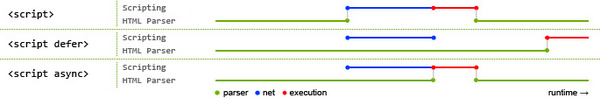

JavaScript盲点记录----(五)
最近在练习JavaScript题目时发现有些实现自己立即并不能想出来，而且有些常见的方法的用法理解是有错误的如parseInt，所以记录一下。这是第五篇，定要温故而知新 。^_^
实现once 函数，传入的函数参数只执行一次
|
|
分域名请求网站的内容原因(摘自知乎)
分域名请求的网站的内容主要是指网站的图片或者视频，接收，css。
原因之一： 节省带宽。比如对于twitter 的主站twitter.com ，用户的每次访问，都会带上自己的cookie，这个cookie比较大，如果twitter的图片放在主站域名下，那么用户每次访问图片时，request header 里都会带有自己的cookie,header里的cookie 还不能压缩，而图片时不需要知道用户的cookie的，所以这部分的带宽就白白浪费了。 在写主站程序时，set-cookie 也不要设置在图片的域名上。
原因之二： 节约主域名的连接数，以提高客户端网络带宽的利用率，优化页面响应。因为老的浏览器，针对同一个域名只允许同时保持两个HTTP连接，将图片等资源请求分配到其他域名上，避免了大图片之类的并不一定重要的内容阻塞住主域名上其他后续资源的连接。
生成任意值到任意值之间的随机数
|
|
数组的随机排序（shuffle）
- 有问题的方法：Math.random
|
|
这种方法并不能真的使数组进行乱序排列。每个元素仍然有很大的几率在它原来的位置附近出现。原因是对于Array.prototype.sort(fn)方法 ：对于同一组a、b值，fn(a,b)需要总是返回相同的值。而对于上面的方法是不可以的。所以针对这一点的改进方法如下。(在v8中对于短数组排序是插入排序，对于长数组是快速排序)
- 改进的方法：缓存随机数
|
|
这种方法就是保证了对于固定的a,b 传入sort 方法中的fn函数返回值总是一样。 但是这种方法由于需要多次遍历数组，所以效率较低。
- 最好的方法：Fisher-Yates shuffle
|
|
异步加载js 的方法
在浏览器中，JavaScript 主线程与UI渲染共用同一个线程。执行JavaScript的时候UI渲染是停滞的，渲染UI时，JavaScript是停滞的，两者互相阻塞。长时间执行JavaScript会造成UI停顿不响应。
具体方案有：
Dynamic Script Element： 动态创建的script标签被插入到页面的DOM树后，就会开始下载src属性指定的脚本。而且通过动态脚本元素下载脚本是异步的，不会阻塞页面的其他下载和处理过程，因此script标签插入<head>中也没问题 。 但这种加载方式在加载执行完之前会阻止 onload 事件的触发。 这种情况可以通过监听’load’事件，在触发这个事件时再执行JS加载解析。XHR Eval或者XHR script：通过XHR 下载了js文件，然后动态创建script 元素1234var script = document.createElement("script");script.type = "text/javascript";script.text = request.responseText;document.body.appendChild(script);async是和DOM解析异步下载，在加载结束后立即执行，在执行时DOM解析停止。defer是和DOM解析过程异步下载，但是在下载结束后不立即解析执行，而是在DOM解析结束后再解析执行下载的JS文件。
